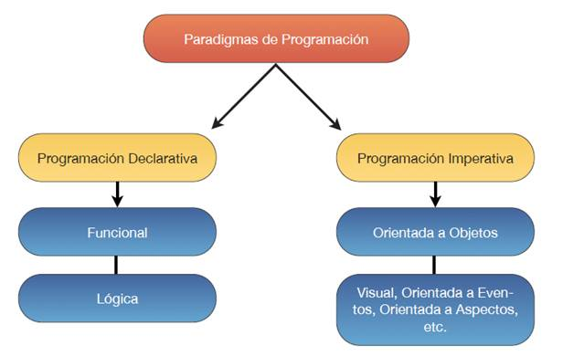
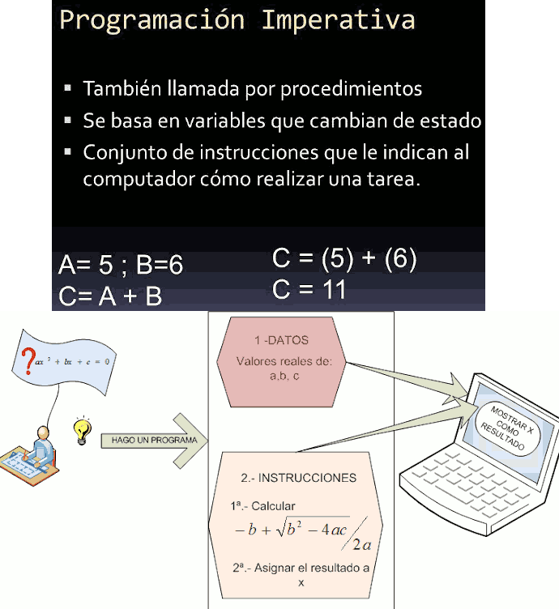

Se entiende por tecnología o paradigma de un lenguaje de programación a la técnica de programar y la manera en que se deben estructurar y organizar las tareas que debe llevar a cabo un programa.

Declarativos
En la programación declarativa las sentencias que se utilizan lo que hacen es describir el problema que se quiere solucionar; se programa diciendo lo que se quiere resolver a nivel de usuario, pero no las instrucciones necesarias para solucionarlo. Esto último se realizará mediante mecanismos internos de inferencia de información a partir de la descripción realizada.
Existen varios tipos de lenguajes declarativos:
- Los lenguajes lógicos, como Prolog.
- Los lenguajes algebraicos, como Maude y SQL.
- Los lenguajes funcionales, como Haskell y Erlang.
Por ejemplo, en el lenguaje Prolog, a partir de una serie de premisas (condiciones iniciales), la aplicación desarrollará el árbol de soluciones finales.
Imperativos, Secuenciales o por Procedimientos
La tecnología imperativa o secuencial hace referencia a la programación en la cual se especifican un conjunto de instrucciones, de un determinado lenguaje de programación, las cuales se ejecutarán de una forma consecutiva o secuencial: después de una instrucción se ejecuta la siguiente y así sucesivamente.
En la programación imperativa se describe paso a paso un conjunto de instrucciones que deben ejecutarse para variar el estado del programa y hallar la solución, es decir, un algoritmo en el que se describen los pasos necesarios para solucionar el problema.

Muchos lenguajes no pueden clasificarse únicamente en un paradigma, sino que incluyen características de varios de ellos.